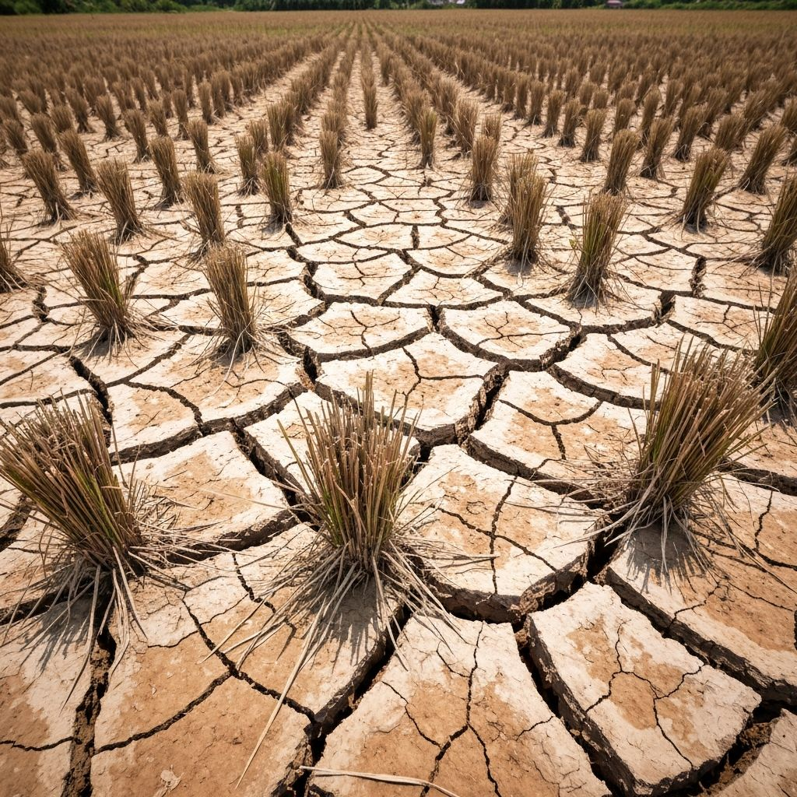
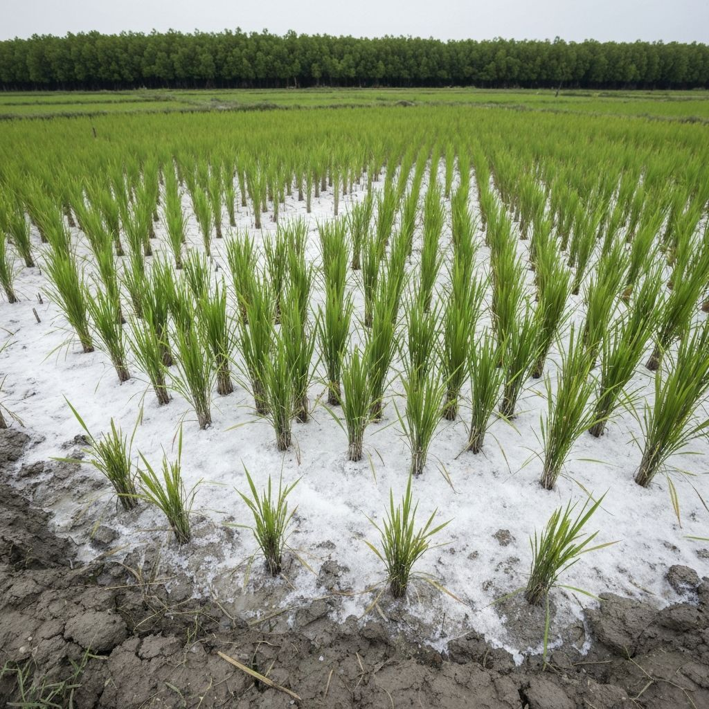
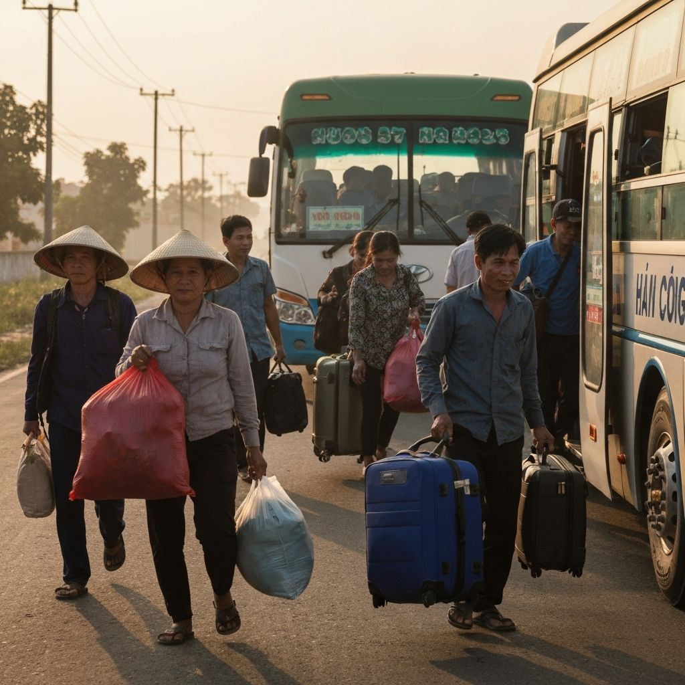
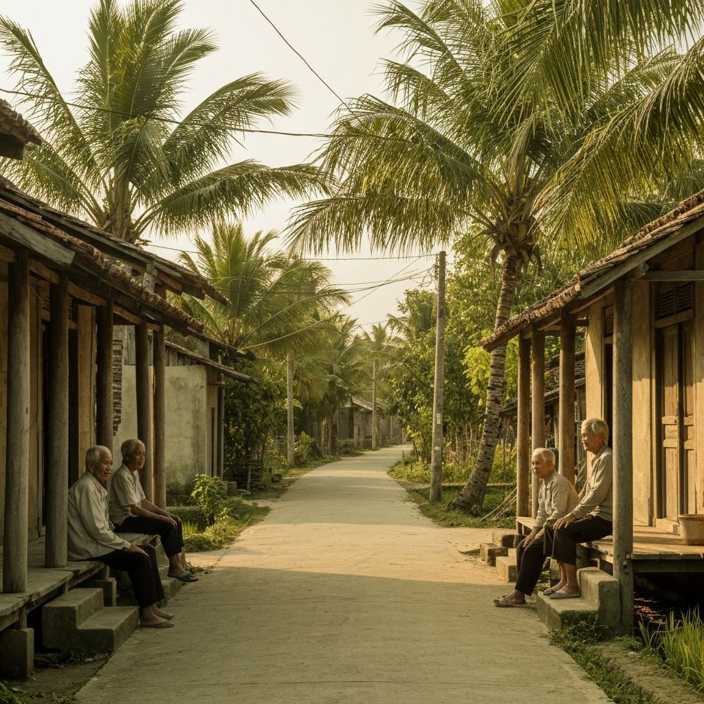

Sự rời bỏ ruộng đồng không đến từ một nguyên nhân duy nhất. Nó là kết quả của nhiều lực tác động cùng lúc - như những con sóng liên tiếp đánh vào một bờ đất vốn đã yếu.
Cú đánh thứ nhất Cú sốc khí hậu
— Ngân hàng Thế giới
Xu hướng nghèo với những cú sốc khác nhau
Ghi chú: Kịch bản lũ lụt được giả định theo kịch bản khí hậu SSP2-4.5 với mức phát thải trung bình; Kịch bản hạn hán sử dụng mức độ rủi ro biến đổi khí hậu bằng kịch bản xấu nhất SSP5-8.5 với mức phát thải rất cao; Kịch bản xâm nhập mặn sử dụng RCP 4.5 kết hợp với sụt lún đất. Trong tất cả các kịch bản, thu nhập được điều chỉnh theo tăng trưởng GDP.
Trước đây, người miền Tây sống dựa vào quy luật của tự nhiên. Mùa nước nổi về khi nào, xuống khi nào, tất cả đều có thể đoán được. Nhưng những năm gần đây, quy luật ấy bị phá vỡ. Nước mặn đi sâu hơn. Mùa khô kéo dài hơn. Lũ không còn về đúng hẹn.


Chuyển dịch cơ cấu đất đai 2006 - 2022
→ 1,9M ha năm 2022
(tăng từ 634K ha)
tăng hơn gấp đôi
Có những năm, nước không về đủ để rửa phèn. Có những năm, nước lại dâng quá nhanh, cuốn trôi cả vụ mùa. Người nông dân không còn canh tác theo kinh nghiệm - họ phải đoán thời tiết và chấp nhận rủi ro.
“Làm ăn ở dưới khó khăn, làm gì cũng khó. Lúa năm hai vụ thì khi trúng khi thất. Cũng nuôi tôm mà đâu có trúng, tôm búng đi đâu hết. Nuôi tôm ít cũng vô vài trăm triệu tiền vốn, sau một vụ thất bát là trắng tay, không còn vốn liếng, đành phải đóng cửa nhà đi làm công nhân.”
Cú đánh thứ hai Cú sốc kinh tế
Ngay cả khi thời tiết thuận lợi, làm nông cũng không còn là con đường “chắc ăn”. Chi phí sản xuất ngày càng tăng. Phân bón, thuốc, giống - tất cả đều đắt hơn. Trong khi đó, giá nông sản, đặc biệt là lúa, không tăng tương xứng. Người nông dân làm nhiều hơn, nhưng lời lại ít hơn.
Thực tế những năm gần đây cho thấy, thu nhập từ trồng lúa đã giảm rõ rệt. Việc lạm dụng phân bón, thuốc bảo vệ thực vật để duy trì sản lượng không chỉ làm chi phí đầu vào tăng cao mà còn khiến đất đai bạc màu, suy thoái nghiêm trọng. Bên cạnh đó, hạ tầng giao thông còn hạn chế cũng làm giảm khả năng tiếp cận thị trường, khiến biên lợi nhuận của người nông dân ngày càng bị thu hẹp.
Thủy sản - trụ cột mới của sinh kế nông thôn
Trong bối cảnh sinh kế dựa vào lúa gạo ngày càng thu hẹp, thủy sản đang nổi lên như một trụ cột mới của kinh tế nông thôn đồng bằng sông Cửu Long. Không chỉ là phương án thay thế, đánh bắt và nuôi trồng thủy sản dần trở thành hướng đi quan trọng, đặc biệt ở các khu vực ven biển.
làm thủy sản
cả nước
vào sinh kế 2022
Hiện khoảng 13% hộ gia đình trong vùng tham gia các hoạt động liên quan đến thủy sản cao gần gấp ba lần mức trung bình cả nước (4,7%). Trong đó, nuôi trồng chiếm 6,5%, khai thác 3,8% và chế biến 3,4%, với mức chồng lấn giữa các hoạt động tương đối thấp.
Dù vậy, điểm chung là phần lớn các hộ làm thủy sản vẫn gắn với khu vực nông thôn nơi sinh kế đang phải liên tục dịch chuyển để thích ứng với những biến động của môi trường và thị trường.
Người ta tìm cách chuyển đổi. Từ lúa sang tôm. Từ tôm sang cây ăn trái. Nhưng mỗi lần chuyển đổi đều cần vốn và mang theo vô số rủi ro. Trong bối cảnh đó, mô hình “con tôm ôm cây lúa” - luân canh giữa nuôi tôm mùa mặn và trồng lúa mùa ngọt được xem là hướng đi tận dụng điều kiện tự nhiên và giảm rủi ro. Tuy vậy, với phương pháp này, thu nhập từ lúa chỉ là phụ, còn chính vẫn là từ tôm. Hơn nữa, mỗi lần chuyển đổi đều cần vốn và đi kèm không ít bất trắc.
Bà Hồ Thị Kim Cương (39 tuổi, tỉnh Bạc Liêu) từng dồn toàn bộ tiền tích cóp vào một vụ tôm. Và rồi mất trắng. “Sau một vụ là không còn gì hết. Đành phải đóng cửa, đi làm công nhân để mưu sinh qua ngày”. Đây không chỉ là câu chuyện cá nhân, mà còn là thực trạng chung của người dân khi việc sản xuất nông nghiệp ngày càng bấp bênh.
Tuy nhiên, dù có nhiều nỗ lực thích ứng, lúa đang dần mất đi vai trò trung tâm trong sinh kế của người dân, chỉ còn đóng góp khoảng 17% vào năm 2022. Điều này phản ánh rõ áp lực kinh tế buộc người nông dân phải rời bỏ mô hình truyền thống.
Cú đánh thứ ba Những lớp trẻ rời đi từ sớm
Khi nông nghiệp không còn đảm bảo cuộc sống, những người trẻ bắt đầu rời đi. Họ không chờ đến khi ruộng bỏ hoang. Họ rời đi từ sớm, từ khi còn có thể chọn.
Hoàng Minh Duy, 20 tuổi chia sẻ thẳng thắn: “Thấy ba mẹ làm cực mà không ổn định, nên tôi không dám theo”. Cậu chọn học nghề điện lạnh, làm việc ngay tại địa phương. Dù thu nhập không cao, nhưng ít nhất nó cũng ổn định hơn so với việc bám trụ với ruộng đồng. Đây là lựa chọn của nhiều bạn trẻ khác trong vùng, họ tìm kiếm những công việc phi nông nghiệp có thu nhập thấp nhưng ổn định, thay vì tiếp tục gắn bó với nông nghiệp truyền thống ngày càng bấp bênh.
Cơ cấu ngành nghề của các công việc mới
sau khi thay đổi công việc
Dữ liệu LMS 2024 cho thấy xu hướng chuyển dịch lao động từ nông nghiệp và thủy sản sang công nghiệp và dịch vụ khác, rõ rệt hơn ở nhóm tuổi 20–30 so với nhóm 30–40.
“Thấy ba mẹ làm cực mà không ổn định, nên em không dám theo.”Hoàng Minh Duy, 20 tuổi - chọn học nghề điện lạnh

Đa dạng hóa hay bấp bênh hóa?
Biến động thu nhập hộ gia đình theo năm:
ĐBSCL và cả nước
Giai đoạn 2010–2022, thu nhập từ tiền công tăng mạnh tại cả Việt Nam và ĐBSCL, trong khi thu nhập nông nghiệp sụt giảm đáng kể — phản ánh quá trình chuyển dịch lao động từ nông nghiệp sang phi nông nghiệp.
2010 → 2022
2010 → 2022
2010 → 2022
2010 → 2022
Trong nhiều năm trở lại đây, thu nhập từ nông nghiệp giảm mạnh, người dân tìm kiếm sinh kế từ nhiều lĩnh vực khác. Tuy nhiên, đằng sau sự đa dạng hoá các hoạt động kinh tế này lại tiềm ẩn các hạn chế.
Thu nhập từ tiền gửi về tăng - phản ánh sự phụ thuộc của những người ở lại vào lực lượng lao động ly hương. Các công việc phi nông nghiệp tại đây đa số vẫn là những công việc kỹ năng thấp, thu nhập thấp và không ổn định.
Ngày càng nhiều thanh niên bỏ nông nghiệp để đi làm những công việc trong các ngành xây dựng và dịch vụ thay vì tìm kiếm các cơ hội làm việc chính thức, đòi hỏi tay nghề cao. Điều này lại góp phần vẽ nên một bức tranh kinh tế bấp bênh cho người dân trong khu vực.
Ruộng thì vẫn còn đó. Nhưng người thì cứ dần ít đi.


Ở thời điểm đó, việc rời quê cũng là một lựa chọn, là một cách để tiếp tục sống. Khi ngày càng nhiều người bỏ ruộng đồng, áp lực lan sang đời sống xã hội. Dòng người ly hương tăng lên, làng quê dần thiếu vắng lao động trẻ. Những người ở lại chủ yếu là người lớn tuổi, không còn đủ điều kiện để chuyển đổi nghề, nhưng cũng không còn đủ sức để làm nông như trước. Điều này tạo ra một vòng xoáy suy giảm: ruộng bỏ hoang, làng vắng bóng người trẻ, sinh kế ngày càng bấp bênh, lại càng khiến nhiều người muốn rời đi hơn nữa.